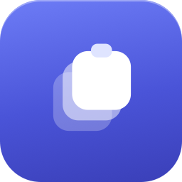
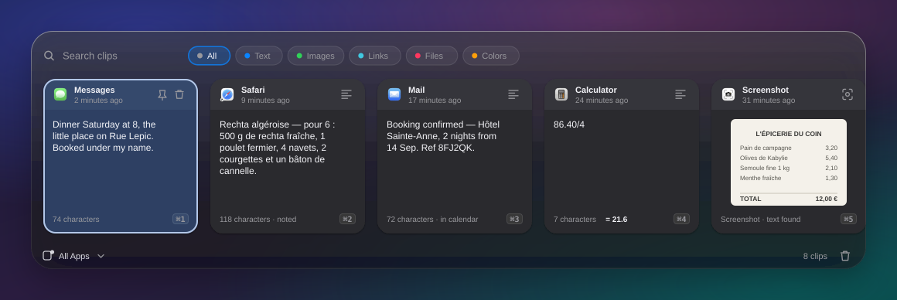
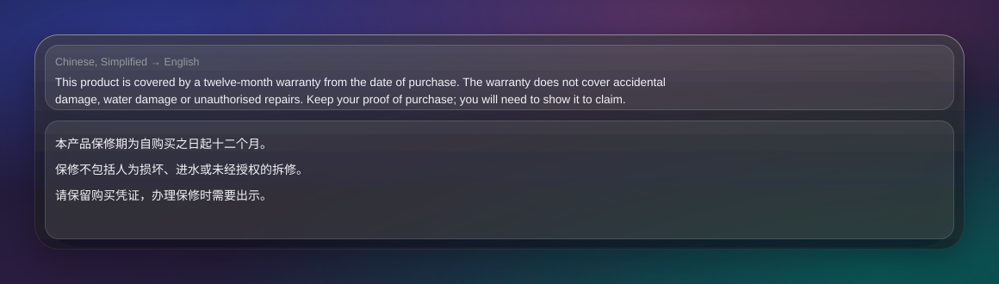

From clipboard to notes and calendar.
Your Mac forgets a copied thing the moment you copy the next one. MemoryClip keeps it, reads it, and turns the ones worth keeping into notes and calendar events.
Press ⇧⌘V anywhere and every recent copy is there — text, links, images, files, colours. Type to find one, press Return to paste it.
Take a screenshot and MemoryClip pulls the text out of it, in 30 languages, so you can search for a picture by what it said.
Copy something in a language you don't read — or screenshot it — and the preview shows it in one you do.
One key sends it to Obsidian, a folder of Markdown files, Apple Notes or a Shortcut — with the picture and the text it found.
No sync, no accounts, no analytics, no network calls at all. Everything runs on your machine, including the language models.
Copy an invitation, or screenshot one, and ⌘E makes it an event — the time, the Zoom link, the address. It can do it on its own for the ones that are plainly appointments.
The panel opens over whatever you're doing and closes the moment you're done.


Five minutes, and one screen that will try to stop you. Here's how to get past it.
Use the Download for Mac button — it gives you a file ending in .dmg, in your Downloads folder.
Double-click the downloaded file. A window opens with the MemoryClip icon and an Applications folder. Drag the icon onto the folder, then close the window.
Open your Applications folder and double-click MemoryClip. macOS will say it cannot be opened because it is not from an identified developer. This is expected. Click Done.
Open System Settings → Privacy & Security, scroll down to the Security section, and you'll see a line about MemoryClip being blocked. Click Open Anyway, then confirm with Touch ID or your password.
Copy a few things, then press ⇧⌘V from any app. Everything you copied is there, waiting.
Two commands, and brew upgrade keeps it current afterwards. The trust line is Homebrew's own check on third-party sources.
brew tap yaminerl/memoryclip https://github.com/YamineRL/MemoryClip
brew trust yaminerl/memoryclip && brew install --cask memoryclipThis handles the Gatekeeper step for you, so steps 3 and 4 above don't apply.
Drag MemoryClip from your Applications folder to the Trash — or brew uninstall --cask memoryclip if you installed it that way. Your clip history lives in your user Library folder and goes with the app if you add --zap to the Homebrew command.
There are more, but these are the ones you'll use every day.
| Key | Does |
|---|---|
| ⇧⌘V | Open the panel from any app |
| ↑ ↓ | Move through the list |
| Return | Paste the selected clip |
| ⇧Return | Paste it as plain text, dropping fonts and colours |
| ⌘1–⌘9 | Paste any of the first nine directly |
| Space | Preview the clip; again on a picture for full size |
| ⌘S | Save the clip as a note |
| ⌘E | Add the clip to your calendar, if it names a date |
| Esc | Back out, one layer at a time |
Short version: nothing you didn't ask for.
No sync service, no accounts, no analytics, no crash reporting. The app makes no network requests of any kind — the text recognition and translation run on your Mac.
Copies marked confidential by password managers are ignored, and card numbers are filtered out of what it reads. You can lock the whole history behind Touch ID.
No Screen Recording, no Input Monitoring. Folder access only for the screenshot folder and the notes folder you choose, and only if you use those features. Calendar access is write-only: it can add an event and cannot read one.
The newest 200 clips are kept and anything older than 30 days is swept away. Both numbers are yours to change, and Clear All History is one menu item.